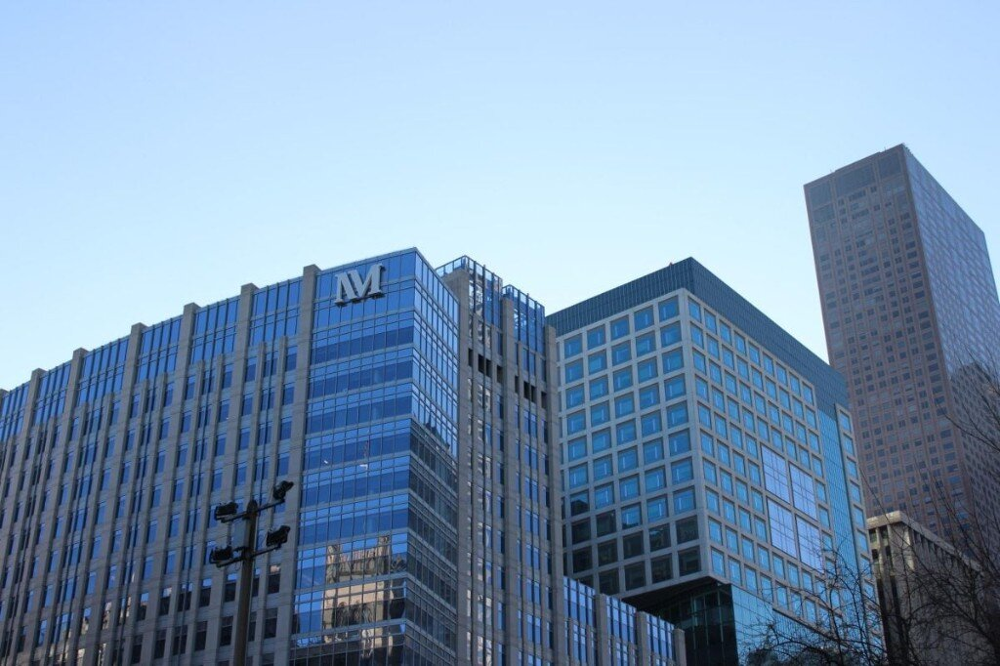
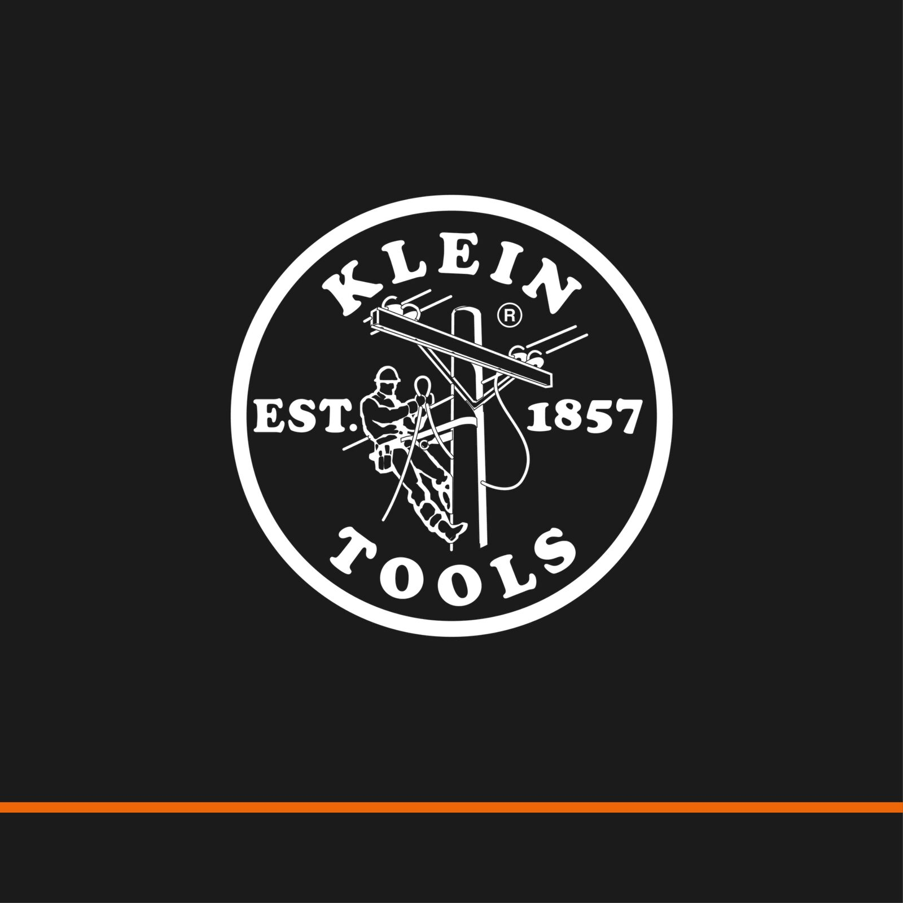
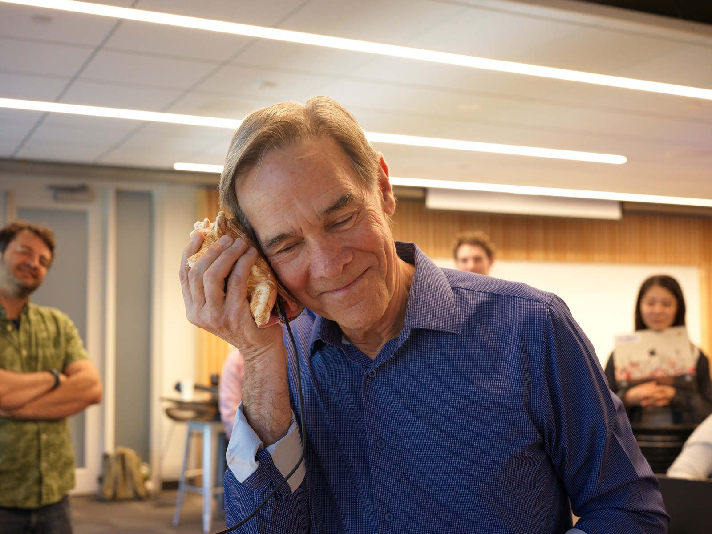

Hello,
my name is Michel. I'm a mechanical engineer specializing in front-end human centered innovation.

New Product Development Engineer

Needfinding in Clinical Environments

Innovative Packaging Design

Product Design Internship

Cairn

Shellphone
Nice to meet you
I'm a Mechanical Engineer who combines rigorous hands-on product development with a human-centered approach to create meaningful products that solve real pain points. I've contributed to the release of products for the biomedical industry to professional tools and love opportunities that put me at the front end of innovation.
Get in Touch
Experience
BS, Mechanical Engineering
University of Notre Dame
Bachelors Degree
Built a foundation in mechanical design, simulation, and prototyping while working concurrently at the Notre Dame Innovation Lab.
New Product Development Engineer
Clippard Inc.
Full-time Engineering
Led 3 biomedical products through release and contributed to 2 in internal development, designing pinch valves and neonatal ventilator systems.
MS, Engineering Design Innovation
Northwestern University
Graduate Degree
Deepening human-centered design, user research, and rapid prototyping to bridge user pain points with engineering constraints.
Product Engineer Intern
Yaskawa
Internship
Maintained life testing and verified specifications for semiconductor silicon wafer handling robotics.
P&G Sponsored
Design Project
Northwestern University
Academic Project
Led a 5-person multidisciplinary team from in-home consumer research sessions to working functional prototypes for P&G leadership.
Needfinding in Medical
Environments
Northwestern University
Academic Project
Conducted clinical observations and stakeholder interviews in GI endoscopy suites to surface unmet needs in Barrett's Esophagus screening workflows.
Product Design Intern
Klein Tools
Internship
Worked on 8 early product development projects from early product concepts to high fidelity prototypes.
Personal Projects

Film Photography
A collection of 35mm film photography documenting travel, shot on my dad's Canon AE-1 Program from the 1980s.

Portfolio
I was able to build my portfolio from scratch with the help of Google's Antigravity, Affinity, and other creative tools.